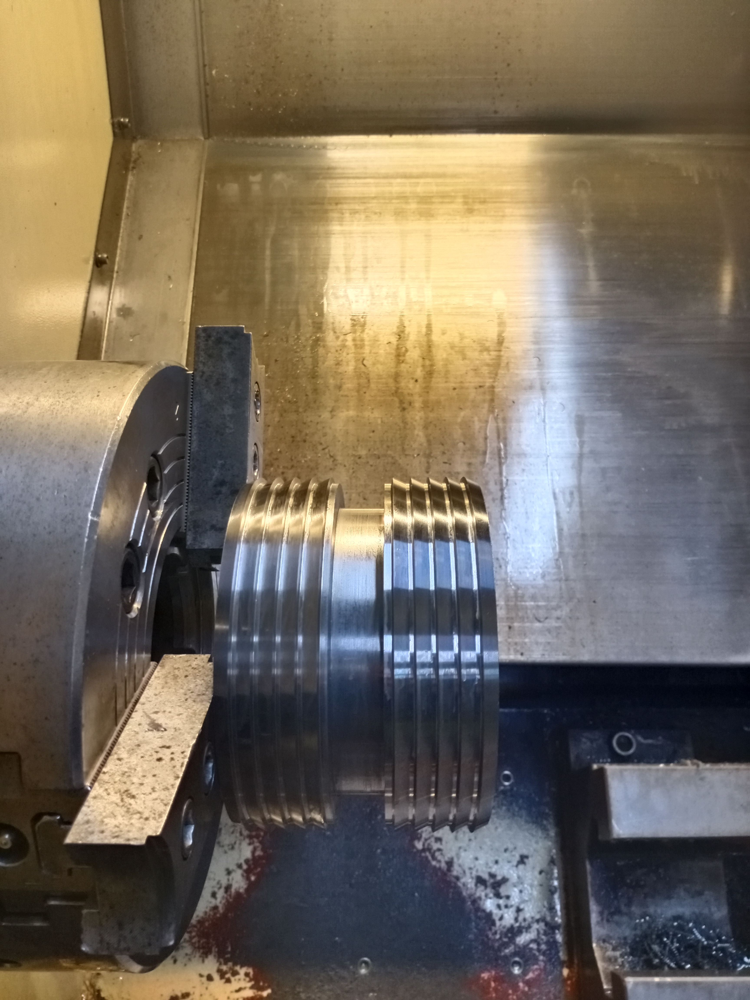
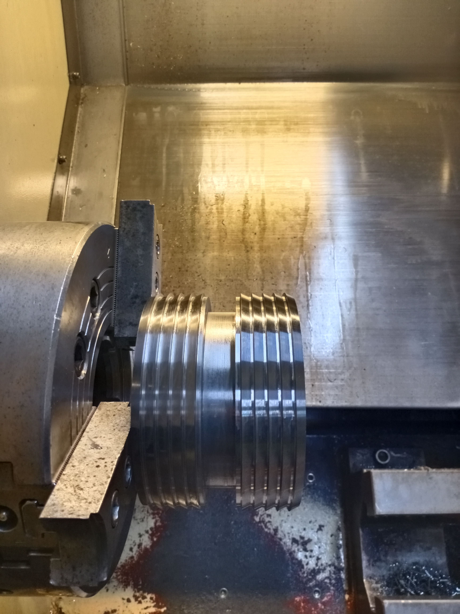
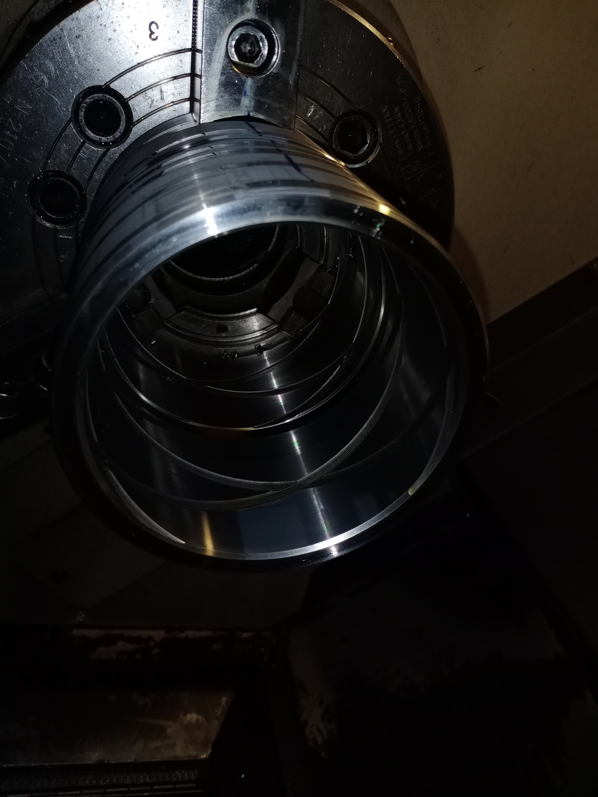
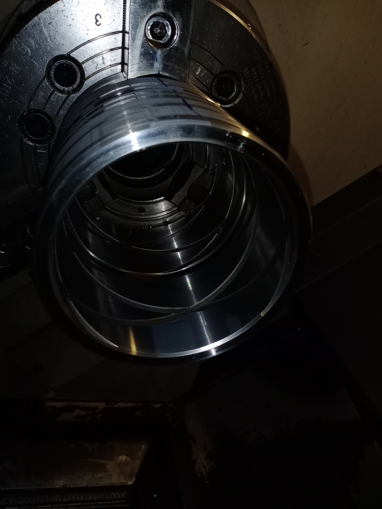

Mani Ravichandiran
Mechanical Engineer | CAD/CAM Programmer | CNC Expert
About Me
Results-driven Mechanical Engineer with 9 years of experience in precision manufacturing, CAD/CAM programming, Design and Drafting. Proven expertise in optimizing production workflows, improving cycle times, and ensuring high-quality output for industries such as semiconductor, aerospace, medical,oil and gas. Adept at leading cross-functional teams, implementing lean practices and mentoring junior staff in a fast-paced environment.
Career Overview
- Proficient in CAD software (AutoCAD, SolidWorks, and NX) for designing and drafting.
- Experience in managing and planning production based on operational priorities.
- Expertise in continuous improvement of manufacturing processes to achieve cost, quality, and delivery objectives.
- Strong mathematical foundation, including algebra, trigonometry, and geometry for complex engineering calculations.
- Strong analytical skills and ability to read and interpret complex technical drawings.
- Leadership and mentoring skills with the ability to work independently and collaboratively.
- Ability to thrive in demanding and fast-paced environments while delivering high-quality work within deadlines.
- Experienced in programming, setting, and operating CNC Lathe, Milling, and VTL machines.
- Expertise in CAM programming tools such as SolidCAM, NX CAM, and Mastercam.
- Skilled in Geometric Dimensioning & Tolerancing (GD&T).
- Knowledgeable in Lean Manufacturing and Continuous Improvement methodologies.
- Background in Precision Engineering and Quality Control.
Skills
- CAD Tools: SolidWorks, AutoCAD, NX
- CAM Tools: SolidCAM, NX CAM, Mastercam
- CNC Controls: FANUC, HURCO, SIEMENS
- Other Skills: Lean Manufacturing, QA/QC, SAP (PP)
- CNC Machines: Turning, Milling, VTL
- Software: SAP(PP), MS Office Tools
- Engineering Knowledge: GD&T, Design & Drafting, QA & QC, Lean Manufacturing, Continuous Improvement
Experience
Scape Precision Pte. Ltd. (Oct 2024 – Present)
CAD/CAM Programmer – Kallang, Singapore
- Design and modify 3D models, technical drawings, and tooling fixtures using SolidWorks and AutoCAD to improve manufacturability.
- Collaborate with engineers and designers to refine prototypes and improve manufacturability.
- Interpret technical drawings, blueprints, and GD&T specifications to ensure compliance with design requirements.
- Program, set up, and operate CNC machines to produce high-precision components for aerospace, semiconductor, and medical sector parts.
- Develop and optimize CNC programs using Mastercam and SolidWorks, reducing cycle times by 15% and improving material utilization.
- Perform routine maintenance and troubleshooting on CNC machines, minimizing downtime.
- Lead and mentor a team of junior programmers, providing training on best practices in CNC machining and CAD/CAM software.
- Implement lean manufacturing principles, resulting in a 10% increase in production efficiency.
Orient Corporation Pte Ltd (Apr 2024 – Oct 2024)
Mechanical Design Engineer – Loyang, Singapore
- Created detailed designs and drawings, technical specifications, and plans for fire suppression systems.
- Conducted research and development activities to enhance performance, efficiency, and safety of existing fire suppression parts.
- Oversaw the prototyping and testing process, performed performance evaluations, and made necessary adjustments to meet quality and safety standards.
- Collaborated with cross-functional teams including Manufacturing, Quality Assurance, Production, and Sales to ensure seamless product development and production processes.
- Prepared detailed engineering drawings, specifications, and documentation for manufacturing and assembly processes.
Guan Lee Hardware Pte Ltd (Apr 2021 – Apr 2024)
Mechanical Engineer – Kaki Bukit, Singapore
- Developed detailed design drawings and specifications for the manufacturing process using SolidWorks and AutoCAD.
- Designed and manufactured custom jigs, fixtures, and tooling solutions to support high-precision machining.
- Modified and revised designs to correct operating deficiencies and reduce production problems.
- Troubleshot and resolved engineering issues related to product design, production, or performance.
- Performed setup and created CNC programs using SolidCAM software or manual methods to run CNC lathe and milling machines (FANUC Control).
Motion Engineering and Design (Jun 2019 – Apr 2021)
CNC Programmer – Bedok, Singapore
- Programmed and operated CNC lathes and mills to produce complex parts with tight tolerances (±0.001”) using FANUC and HURCO controls.
- Utilized AutoCAD and SolidWorks to create 2D and 3D models for CNC machining.
- Conducted quality inspections using gauges, micrometers, and calipers to ensure parts met specifications.
- Maintained accurate documentation of CNC programs, tooling setups, and production schedules.
- Assisted in the transition from manual to CNC machining, resulting in a 25% increase in production capacity.
Barathy Industries (Jun 2016 – May 2019)
Graduate Engineer Trainee – Chennai, India
- Worked on multiple assigned engineering projects simultaneously and assisted senior mechanical engineers with various tasks as required.
- Assisted and collaborated with the team to improve operating procedures for existing parts.
- Set up and operated CNC turning and milling machines using FANUC and SIEMENS controls.
- Developed technical documents to specify manufacturing processes including routing, tool lists, setup sheets, in-process drawings, and in-process inspection requirements for process continuity.
Designs

 



 

Contact
Address: #02-1451,Block 45,Bendemeer road, Singapore-330 045.
Email: srmu24@gmail.com
Phone: +65 8615 2500
Linkedin: LinkedIn Profile